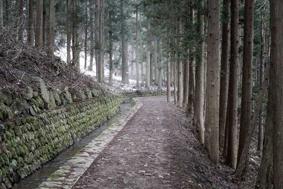
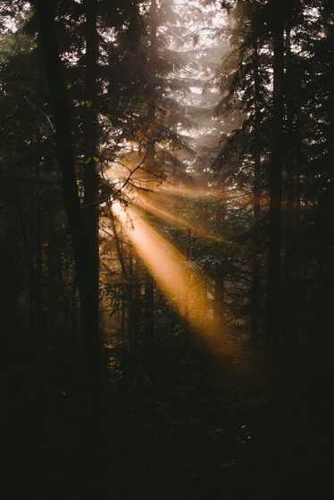
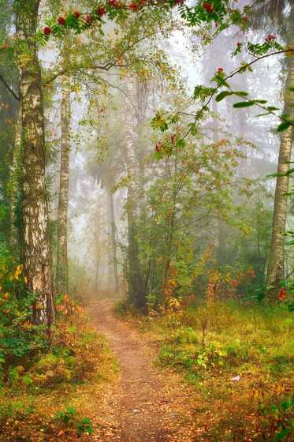
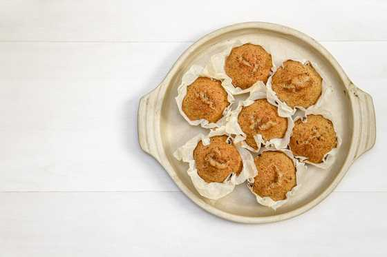
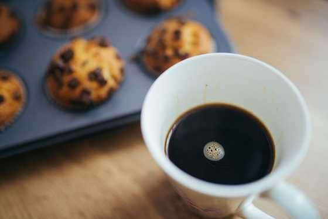
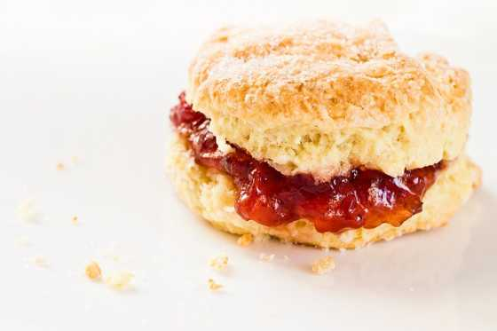
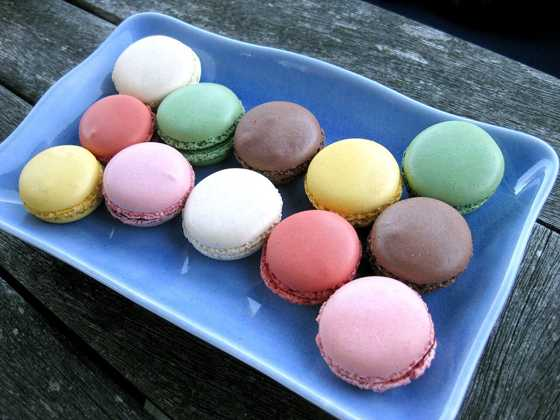
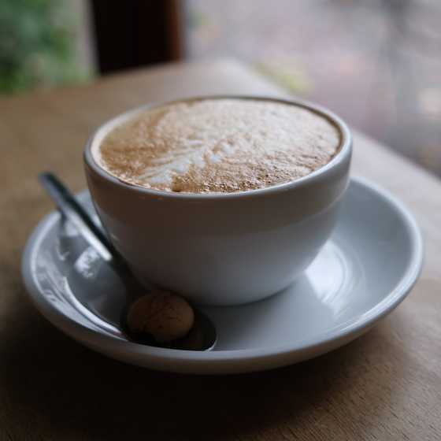

山梨県北杜市・小淵沢
森の中で、
「ciao」とひと息。
木々にかこまれた小さな店で、焼き菓子とトーストを。立ち寄った人に、気軽なあいさつを交わすような一杯と一皿をどうぞ。
コンセプト: 森のなかの、あいさつのように気軽なおやつ時間
お店のこと
森の中にある、小さな焼き菓子のお店。
ciaoは、山梨県北杜市小淵沢町にあるカフェです。Instagramには、スコーン・マフィン・クッキー・マカロン・シフォンケーキといった焼き菓子や、きのこ料理・シチューの写真が並んでいます。口コミサイトの投稿では、森の中にある店で、マフィンとトーストが特徴、建物の前にテラス席がある、と紹介されています。
プロフィールによると、店内は5席ほど、敷地内に駐車場があり、お支払いは現金またはPayPayです。
情報源: Instagram @ciao10184/食べログ(北杜市小淵沢町のカフェ一覧・口コミ)
店名「ciao」の由来は確認できていません。イタリア語の挨拶「ciao(出会いにも別れにも使う軽いあいさつ)」という一般的な意味から、このページでは「森の中で気軽にあいさつを交わす店」という制作側のイメージで言葉を組み立てています。お店の考えを示すものではありません。


メニュー
マフィン、スコーン、トースト、あたたかい一杯。
Instagramで確認できる焼き菓子やお料理のイメージを、フリー素材の写真で表しています。お店で提供しているものそのものではありません。







| 焼き菓子 | スコーン・マフィン・クッキー・マカロン・シフォンケーキなど(Instagramの投稿より。日替わり・季節で変わる可能性があります) |
|---|---|
| お料理 | トースト、きのこ料理、シチューなど(Instagramの投稿より。内容は準備中) |
| 価格 | 準備中 |
口コミ
こんな声が届くお店になりますように。
以下は制作側が作成した「イメージ例」です。実在のお客様の声ではありません。
森を眺めながら食べる焼きたてのマフィンが、うれしい休憩になりました。
トーストとコーヒーで、ゆっくり朝のひとときを。テラス席も気持ちよさそうでした。
小さな店内であたたかく迎えてもらえて、「また来ます」と自然に言えました。
アクセス・ご案内
小淵沢の森へ、ようこそ。
| 所在地 | 〒408-0044 山梨県北杜市小淵沢町１０１８４−２ |
|---|---|
| 電話 | 準備中 |
| 営業時間 | Instagramのプロフィールには「8:00-16:00(ラストオーダー15:30)」とあります。変更される場合があるため、最新情報はInstagramでご確認ください。 |
| 定休日 | 準備中(口コミ投稿では「基本は平日のみ」との記載あり。要確認) |
| 駐車場 | 敷地内に6台、敷地外に5台ほど(Instagramのプロフィールより) |
| SNS | Instagram @ciao10184 |